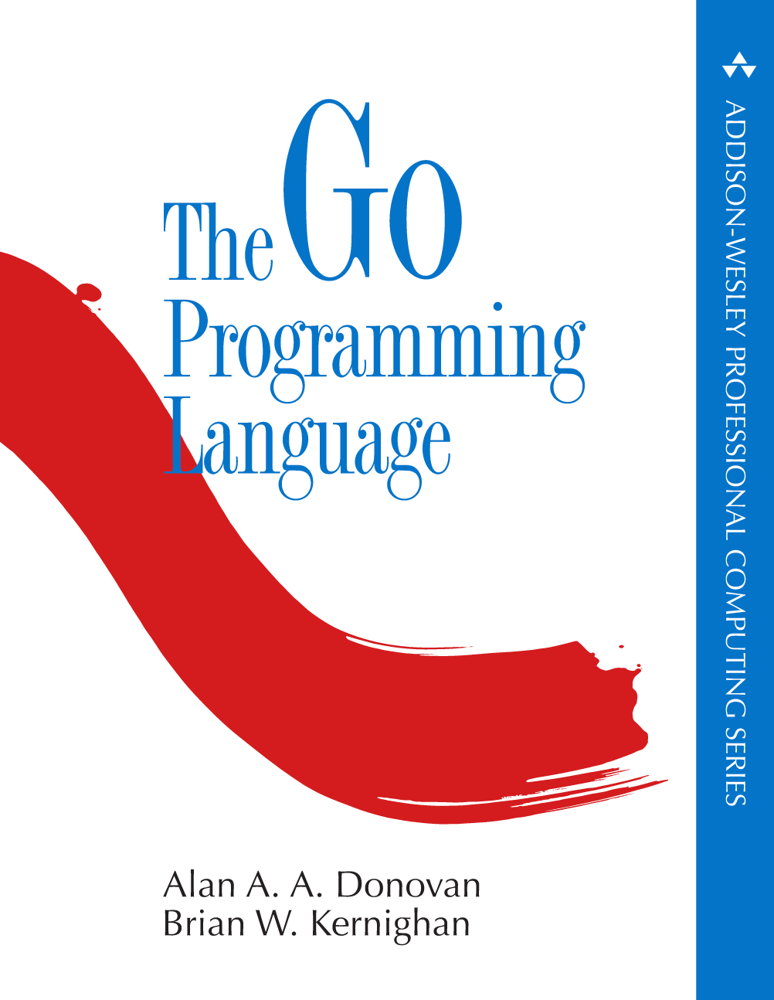

|  |
The Go Programming Language
Alan A. A. Donovan · Brian W. Kernighan
Alan Donovan is a Staff Engineer in Google's infrastructure division,
specializing in software development tools. Since 2012, he has been
working on the Go team, designing libraries and tools for static
analysis. He is the author of the
Brian Kernighan was in the Computing Science Research center at Bell Labs until 2000, where he worked on languages and tools for Unix. He is now a professor in the Computer Science Department at Princeton. He is the co-author of several books, including The C Programming Language and The Practice of Programming. |